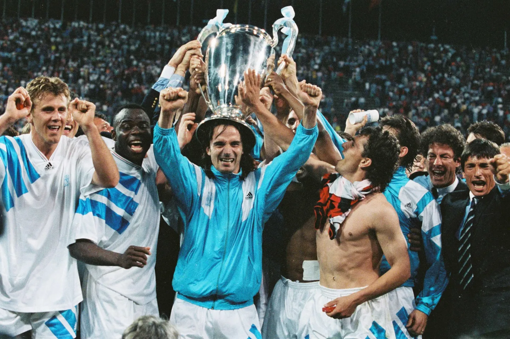

Olympique de Marseille Supporters

Les différents groupe de Supporters
Le 26 mai 1993
La finale de la Ligue des champions de l'UEFA 1992-1993 oppose l'Olympique de Marseille à l'AC Milan le 26 mai 1993 au stade olympique de Munich, à Munich, en Allemagne. Vainqueur sur le score de 1-0, le club phocéen devient à cette occasion le premier (et à ce jour unique) club français à remporter la compétition, 37 ans après sa création, ainsi qu'un trophée continental de football.
Le stade vélodrome
Le stade vélodrome a était créer en 1937 a ce jour il est doté d'une capacité de d'environ 67 000 places le stade est réputé pour avoir une ambiance volcanique avec des tifos légendaires. Lien vers Youtube